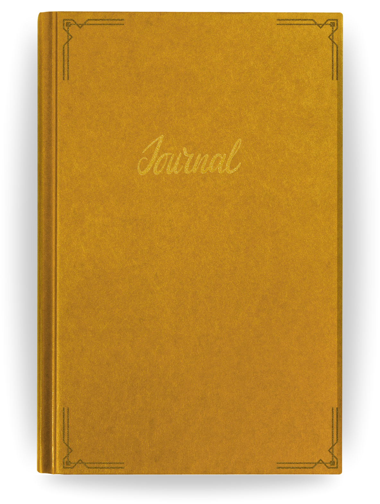

About This Site
Howdy hey! This is a personal fan project. It is a character journal and notice board built for our D&D campaign, following Marcy Marple, a detective-in-training working out of the Bai Detective Agency in Throneport, Karrnath. It isn't distributed anywhere beyond our table. It exists purely because I love this campaign and wanted somewhere for it to live outside of session notes.
Honestly, I could never decide how to do character journals too. I have all the crafting supplies and materials sitting ready to make a physical one. But I wanted something the other players could actually interact with too, not just something that sits in my room just for me to enjoy. So I guess I made it harder on myself and built this instead!
The whole thing is an homage to the things that got me into mysteries and interactive fiction in the first place: Nancy Drew PC games (the old Her Interactive point-and-click series and the broader point-and-click adventure game genre of the late '90s and 2000s.
Personal Thanks
To Tom — thank you for making it possible for me to keep playing this campaign every week. You cover what it costs for me to sit at this table, and that generosity is the only reason Marcy Marple gets to keep solving cases. This whole website exists because of that!
To our DM, for building a world worth obsessing over enough to make a fan website for it.
To my brain and my ADHD meds. Thank you for keeping me on track and keeping the motivation alive long enough to actually make and finish this, instead of just talking about it forever
Credits & Sources
Images
- Cork board / notice board background — original composition combining a Nancy Drew inspired color palette with Art Deco pattern motifs.
- "The Boneport" magazine photo — a vintage Bettie Page pin-up photograph, used here purely for personal, non-commercial flavor as an in-universe gag prop (a censored "girlie mag" pinned to a 1920s detective office corkboard). The leaf overlays were added by me in Photoshop for modesty. This image is not original work and is used for personal enjoyment only — it is not redistributed, sold, or claimed as my own, and would need to be replaced with an original or properly licensed image before any public or commercial use.
- Other small icons and UI assets (phonograph, magnifying glass cursors, folder, bulletin board icons, etc.) — either found as free-use assets online or created by me in Photoshop.
Fonts
All fonts used are free, demo, or open-license fonts sourced from DaFont, FontSpace, and Google Fonts. Full credit to their respective creators — I don't have a complete list of every individual designer, but none of these fonts were paid or premium licenses, and all were free for personal use at time of download.
Sound
Ambient tracks, door sounds, page-turn effects, and writing sounds were sourced from public-domain YouTube audio, Pixabay Audio, and free-license tracks from creators including Dragon Studios and contributors to the Freesound community. Full credit to those original creators.
The office/case-file background music is the L.A. Noire menu theme, which is copyrighted material owned by Rockstar Games / Team Bondi. It's used here purely for personal, non-commercial fan enjoyment — not redistributed, monetized, or claimed as original work.
Code & Implementation Ideas
- Firebase (Google) powers the live notice board — community notes and custom calendar events sync in real time via Firebase Realtime Database.
- Calendar of Galifar data and structure referenced from a calendar built on Fantasy Calendar (fantasy-calendar.com) — month names, week structure, and Eberron holiday data.
- Art Deco button styling adapted from a CodePen by ol-ivier (Art Deco Button Anthology).
- Taped paper note styling adapted from a CodePen by sdthornton.
- Everything else — the scene system, journal page-turning, case file reader, calendar generator, weather system, and notice board functionality — was custom-built for this project.
This project is non-commercial, made for personal and small-group use only. If anything here is yours and you'd like it credited differently or removed, please reach out.